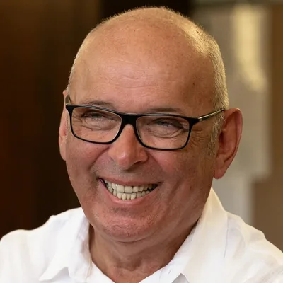
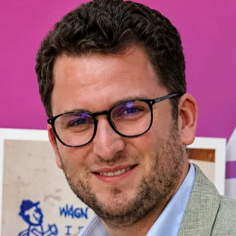

DIE STIFTUNG
Unternehmerisch denken.
Menschlich handeln.
Die Chance Jugend Stiftung wurde 2003 vom Bamberger Unternehmer Heribert Trunk gegründet. Ausgangspunkt war eine einfache Überzeugung: Junge Menschen brauchen nicht nur Unterstützung. Sie brauchen Chancen, ihr Leben aus eigener Kraft zu gestalten.
UNSER ANSPRUCH
Hilfe zur Selbsthilfe.
Deshalb fördern wir Projekte in Deutschland und Afrika, die Halt geben, Fähigkeiten entwickeln und Wege in Bildung, Arbeit und Selbstständigkeit eröffnen. Dabei arbeiten wir mit erfahrenen Partnern vor Ort und achten darauf, dass Hilfe möglichst dauerhaft Wirkung entfaltet.
Unser Anspruch ist Hilfe zur Selbsthilfe: nicht Abhängigkeit finanzieren, sondern Entwicklung ermöglichen.
DER STIFTUNGSVORSTAND
Der Stiftungsvorstand

Heribert Trunk
Gründer · Unternehmer · Impulsgeber
Barbara Trunk
Engagement · Projekte · persönliche Begleitung

Julius Trunk
Strategie · nächste Generation · Weiterentwicklung
Gemeinsam verbindet uns ein Ziel: Damit das Leben junger Menschen gelingt.
DER NÄCHSTE SCHRITT BEGINNT MIT EINEM GESPRÄCH